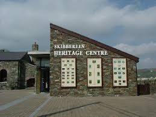
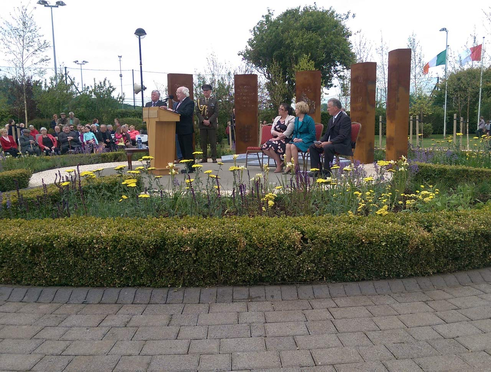
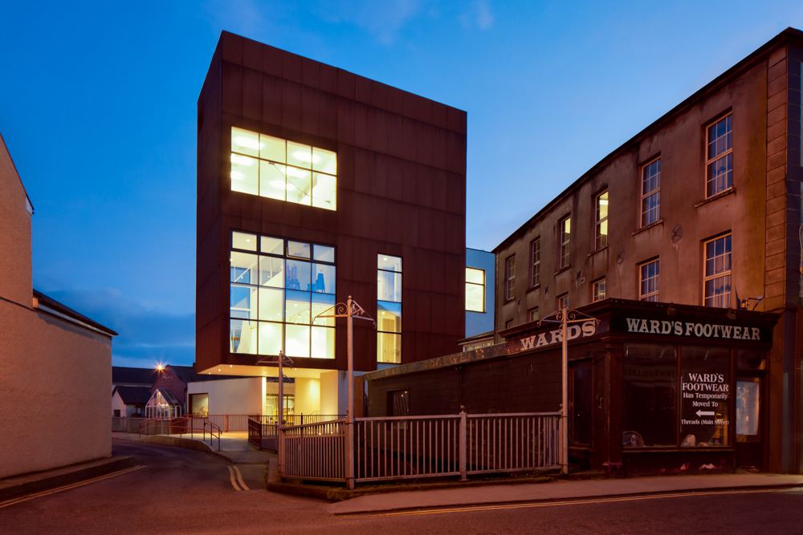
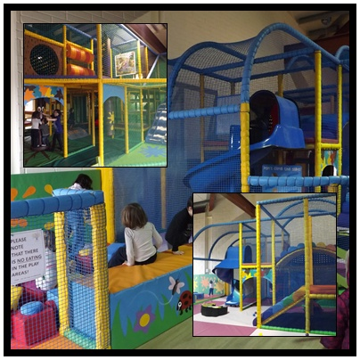

|  |  |
| Skibbereen Heritage Centre Address: Old Gasworks Building, Upper Bridge Street, Skibbereen, Co. Cork. (028) 40900 | O'Donovan Rossa GAA Park Address: Rossa Rd, Marsh, Skibbereen, Co. Cork. (028) 21649 |
|  |  |
| West Cork Arts Centre Address: Uillinn, Marsh, Skibbereen, Co. Cork. (028) 22090 | The Treehouse Address: 11/12, Marsh Rd, Marsh, Skibbereen, Co. Cork. (028) 51699 |